Science is not only its elegant, familiar conclusions, and neither is ReLeaf. It is built over countless days and nights: the repeated gels, the failed assemblies, the setbacks, and the breakthroughs that followed. Every experiment of the past five months, including Golden Gate Assembly, transformation, Arabidopsis vernalization, hydroponic system optimization and bioreactor testing, was recorded on the day it happened, without alteration.
Our research is documented in a monthly electronic notebook, and every entry follows the same structure: date, title, purpose, step-by-step procedure, result, experiment operator and experiment recorder (see Tips for reading these files).
- Date
20260423- Title
- Miniprep
- Purpose
- Using miniprep kit (Viogene) to isolate pNW33N plasmid from E. coli
- Procedure
-
- Collected cells from liquid culture by centrifuge 23444 g for 1 min.
- Repeat the previous step until all of the liquid cultures were collected.
- Add 200 µL MX1 buffer and resuspend pellet by pipetting.
- Result
-
Plasmid ng/µL A260/280 A260/230 pNW33N #1 71 1.775 0.910 pNW33N #2 78 1.660 0.684 - Operator
- Chars
- Recorder
- Chars
Season calendar
Daily work Set-up, prototyping or wrap-up Planned
How our work evolved
-
Phase 1 Dec to Apr
Foundation and Safety
The season started with rigorous team safety training, the set-up of protocols for basic experiments, and early dry lab modeling, alongside human practices outreach with experts and schools.
-
Phase 2 Apr to May
From Design to Lab
As our protein and peptide designs matured, we moved into molecular cloning, including Golden Gate Assembly and colony PCR. Alongside it we established our Arabidopsis plant-stress set-ups and started the hydroponic and bioreactor pilot runs.
-
Phase 3 Jun to Aug
Core Execution and Insight Integration
The summer was our peak of operation and experimental progress. Wet lab cloning, bioreactor runs with Bacillus subtilis, plant salinity and heat stress assays, and protein expression and purification ran in parallel, and continuous measurement was tightly coupled with vigorous human practices engagement.
-
Phase 4 Sep to Oct
Result Synthesis and Wiki
Wrapping up and polishing the final data analysis and characterization, model validation, and full wiki documentation.
Month by month
Each file below is the team's own export, including gene circuit construct results, plant protection outcomes and electrophoresis gel results. The lab notes were recorded daily without post-processing, so all original entries, such as failed runs and repeated gels, are still included.
Titles and names are as typed in the notebooks. The icon beside each one is sorted from its title by keyword.
April 2026
- Recovered and verified the pNW33N plasmid.
- Prepared sfGFP DNA fragments by PCR.
- Built the initial shuttle vector using Gibson Assembly.
- Verified the assembled plasmid by enzyme digestion.
- Started setting up the Arabidopsis hydroponic system. Plants
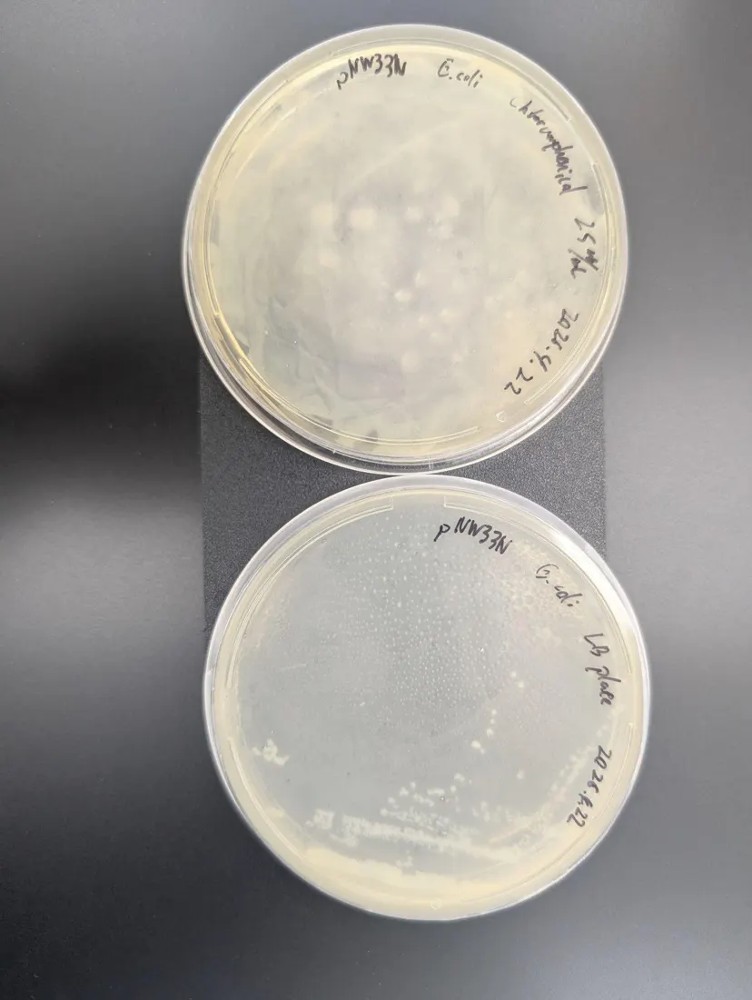
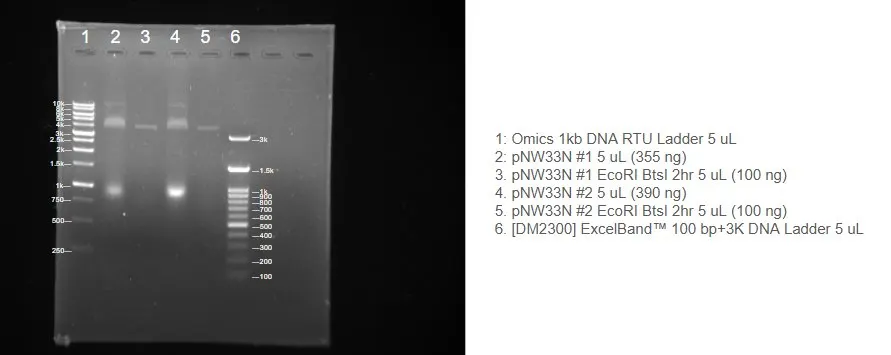
| Recover E. coli harboring pNW33N from BCRCChars | p. 6 | |
| MiniprepChars | p. 8 | |
| Enzyme DigestionChars | p. 9 | |
| Hydroponic System TestingGabriel | p. 11 | |
| Preparation of PCR-Amplified sfGFP fragmentsGabriel | p. 11 | |
| Cleanup of PCR or Restriction enzyme digestion productsGabriel | p. 14 | |
| Gibson assembly and TransformationGabriel | p. 14 | |
| Gibson assembly and transformationGabriel | p. 16 | |
| Recover Bacillus Subtilis 168 from BCRCChars | p. 18 | |
| MiniprepChars | p. 20 | |
| Enzyme digestionChars | p. 21 |
May 2026
- Prepared electrocompetent Bacillus subtilis.
- Tested electroporation conditions for B. subtilis.
- Prepared plasmid DNA for bacterial transformation.
- Established Arabidopsis salinity experiments. Plants
- Tested NaCl + trehalose conditions to study stress protection. Plants
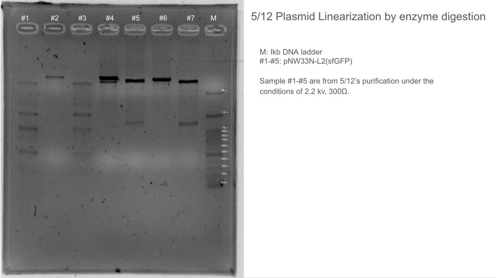
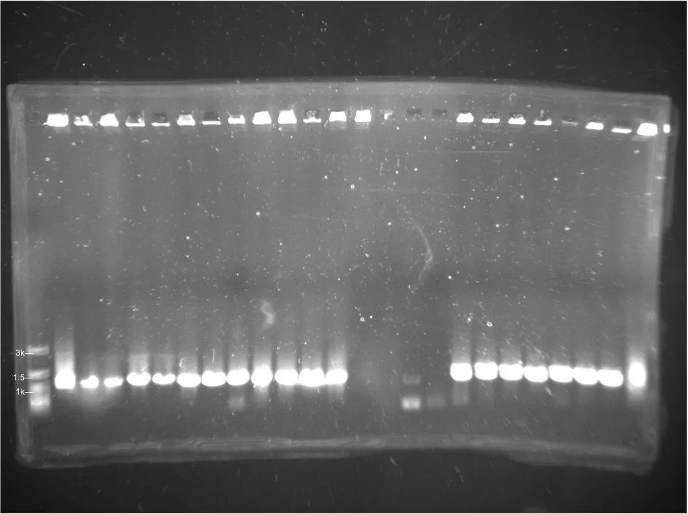
| Medium PreparationChars | p. 5 | |
| Plasmid TransformationSophie H | p. 7 | |
| Pick up single colony of sfGFP #G1Sophie H | p. 9 | |
| Miniprep & Glycerol stockGabriel | p. 11 | |
| electroporation competent B.sub 168 preparationGabriel | p. 12 | |
| Prepare Salinity Agar PlateChloe | p. 14 | |
| MiniprepChars | p. 16 | |
| Prepare recovery mediumChloe & Sophie H | p. 16 | |
| Prepare ½ MS agar (30 mL)Abby T | p. 19 | |
| ElectroporationGabriel | p. 21 | |
| Preparation of Bacillus subtilis competent cellsChloe | p. 23 | |
| Purification of plasmidsSophie C | p. 25 | |
| pNW33N-L2 (sfGFP) plasmid linearizationAbigail, Abby Tsai | p. 26 | |
| Colony PCRChloe, Olivia Lin, Abigail | p. 30 | |
| MiniprepChloe, Olivia Lin, Ryan Yuan | p. 32 | |
| Preparing NaCl or Trehalose containing agar plate -> remake 20260506’s salinity plateAbby Kao, Abigail, Audrey H, Naomi | p. 32 | |
| Preparing Hydroponics MediumNaomi Lin, Joshua Hong, Sara Chen, Sophie Huang | p. 35 | |
| ElectrophorationSara Chen, Sophie Huang, Chloe Wu, Abigail | p. 37 | |
| Prepare 1 Liter of LB Agar PlateChloe W, Ryan Wei, Ryan Yuan, Abigail, Naomi, Phoebe Chen, Alex | p. 37 | |
| Remaking Bacillus subtilis Competent CellChloe , Sara C, Sophie H, Abigail L, Renee K, and Ethan C | p. 40 | |
| ElectroporationChloe W, Olivia Lin, Abigail, Abby T | p. 42 | |
| Medium PreparationChloe W, Olivia Lin, Abigail, Abby T | p. 42 | |
| Electroporation competent cell (Bacillus subtilis) preparationGabriel | p. 43 | |
| MiniprepSophie Chen and Chloe | p. 45 | |
| LB Agar plateAbby T and Abigail | p. 46 | |
| ElectroporationSophie L | p. 48 | |
| ½ MS Medium preparationAbby K, Ethan Chang, Olivia Lin, Sophie H | p. 50 | |
| ElectroporationNaomi, Sara, Phoebe, Ethan C, Sophie C, Sophia Y | p. 52 | |
| Agar Plate PreparationChloe W, Ethan C, and Sophia Y | p. 54 | |
| Agar Plate PreparationChloe, Olivia L, Sophie L, Sara C | p. 56 | |
| Competent CellChloe, Olivia Lin, Sophie Liu, Sara Chen | p. 56 | |
| ElectroporationGabriel | p. 58 | |
| Seeding arabidopsis in the agar plateSarah Chou | p. 58 | |
| Hydroponic medium preparationChloe W | p. 59 | |
| Hydroponic Medium PreparationSophie L | p. 61 | |
| MiniprepSophie C , Sophie L , Sophia Y , Alex | p. 61 | |
| Preparation LB agar plateSarah C , Sophie H , Olivia L, Ryan Y , Sophia Y | p. 65 | |
| Agar Plate PreparationSophie L, Chloe, Sara Chen | p. 67 | |
| LB Medium PreparationSophie L, Chloe | p. 67 | |
| Agar PreparationRyan Wei, Alex | p. 68 | |
| Agar Plate PreparationChloe, Professor Kyle | p. 70 |
June 2026
- Tested B. subtilis growth in the bioreactor.
- Prepared and verified different genetic parts.
- Performed transformation and Golden Gate Assembly.
- Continued Arabidopsis salinity experiments. Plants
- Measured fresh weight and chlorophyll content to evaluate plant growth. Plants
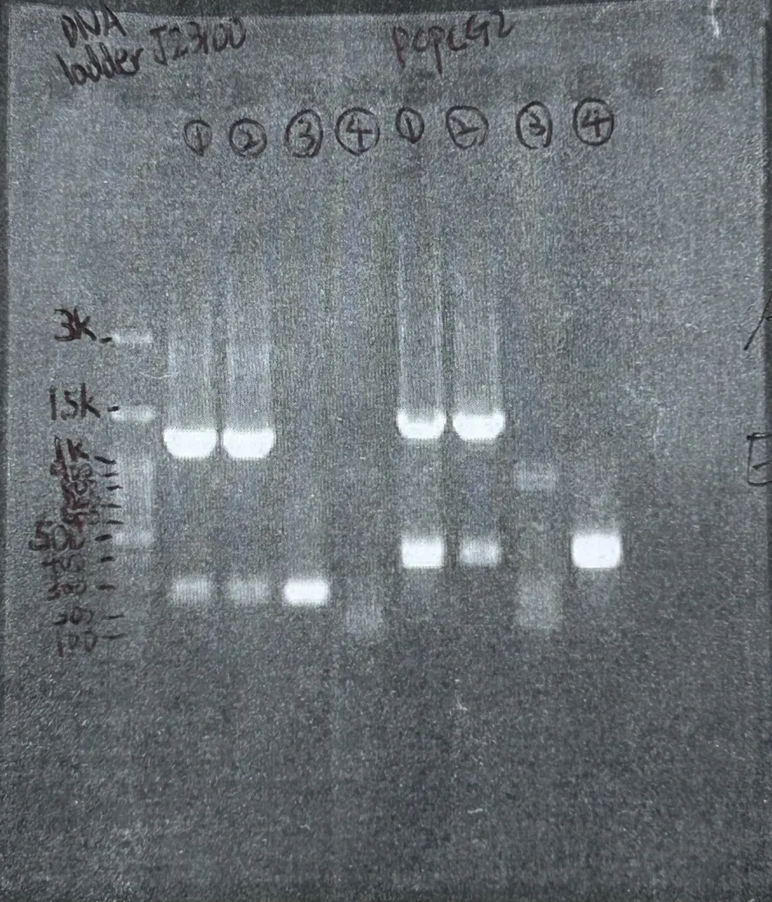
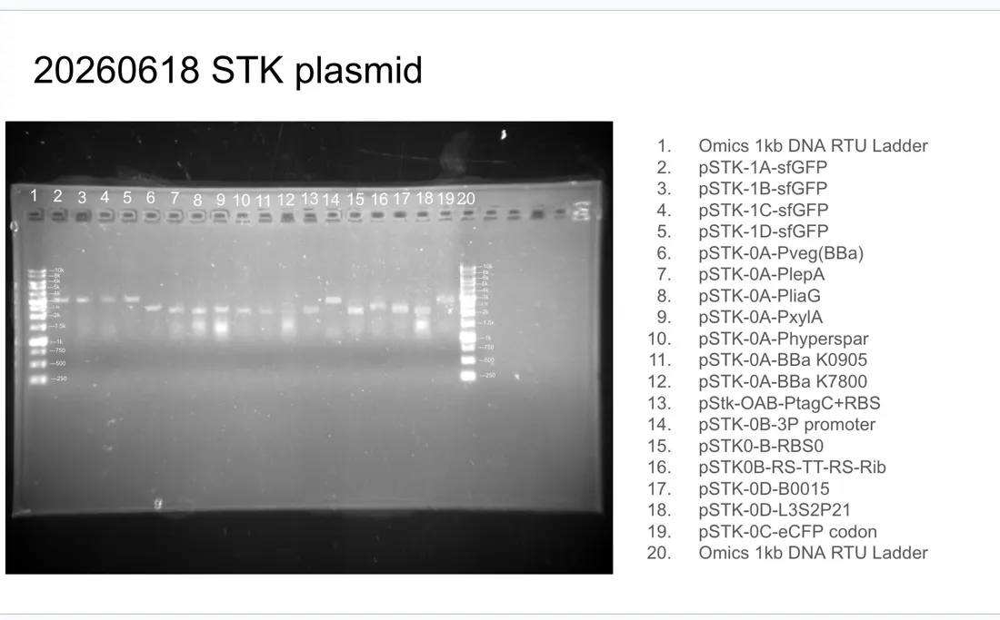
| Growth Curve of Bacillus subtilis 168 in normoxia and hypoxia conditions.Gabriel | p. 6 | |
| Hydroponics mediumChloe , Sophie C | p. 6 | |
| TransformationSarah C , Olivia L , Sophie C | p. 8 | |
| DNA purification of promoter-PcpcG2-veg & EEBDChloe | p. 8 | |
| PCR of PcpcG2-veg & EEBDChloe and Sophie C | p. 8 | |
| TransformationSophie L, Sophie C, Sophia Y | p. 11 | |
| Liquid cultureSophie L, Sophie C | p. 11 | |
| MiniprepChloe, Sophie L, Anton, Noah | p. 13 | |
| Prepare 0.8% Agarose gel for DNA electrophoresisSophie L, Noah | p. 13 | |
| Plasmid Linearization by Enzyme DigestionSophie L. , Noah | p. 14 | |
| Liquid cultureSophie L, Sophie C, Abby K, Naomi, Joshua, Sophie H | p. 14 | |
| ElectrophoresisChars | p. 15 | |
| MiniprepSophie L, Noah, Anton | p. 17 | |
| Prepare 0.8% Agarose Gel for DNA ElectrophoresisSophie L | p. 18 | |
| LB Medium PreparationAbby T and Abigail | p. 18 | |
| Plasmid linearization by enzyme digestionChloe | p. 19 | |
| Golden Gate AssemblyChloe, Sophie L., and Ryan Y | p. 22 | |
| Bacillus subtilis growth rate in bioreactorJoshua, Chloe, and Ryan W | p. 22 | |
| Liquid Culture of pJUMP1A–pJUMP29-1DJoshua, Ryan Wei, and Hachi | p. 23 | |
| ElectrophoresisSophie L, Sophie C, and Sarah C | p. 23 | |
| Chlorophyll ExtractionPhoebe C., Sophia Y | p. 26 | |
| Transformation of Bba_J232119 and Golden Gate Assembly of 6/6Chloe, Phoebe, and Sophia Y | p. 26 | |
| Agar PreparationSophia Y and Chloe | p. 27 | |
| Bacillus subtilis growth rate in Bioreater (Continuous from 20260606)Chars | p. 27 | |
| Agar PreparationAbigail and Sophia Y | p. 30 | |
| Prepare 1.0% Agarose Gel for DNA electrophoresisNaomi | p. 30 | |
| Colony PCRAbigail and Sophia Y | p. 31 | |
| Hydroponic Medium PreparationSophia Y and Abigail | p. 31 | |
| Sanitizing equipmentAbigail and Sophia Y | p. 32 | |
| Prepare 1.0% Agarose Gel for DNA electrophoresisAbby K, Sophia Yeh, Abby T | p. 34 | |
| MiniprepAbigail, Abby K, Jacquelyn, Sophia Y | p. 34 | |
| Enzyme Digestion of J2 (J23100 sample 2)Chloe, Sophie L, Abby T, Abigail | p. 35 | |
| Prepare 1.0% agarose gel for electrophoresisSophie L | p. 36 | |
| Prepare 1.0% Agarose Gel for ElectrophrosisAbby T and Ethan Chang | p. 39 | |
| ElectrophrosisAbby T | p. 39 | |
| DNA LigationJacquelyn, Abby T and Abigail | p. 40 | |
| Electrophoresis and Gel extractionEthan Chang | p. 41 | |
| Gel ExtractionAbby T | p. 41 | |
| Transformation of pNW33N-L2 (sfGFP)Jacquelyn, Abby T, Chloe, Abigail, Sophie L, and Olivia L | p. 42 | |
| Agar PrepAbigail, Jacquelyn, Sophie C, Joshua | p. 45 | |
| Transformation PcpcG2-veg/EEBD-MF001Sarah C | p. 47 | |
| TA cloningSarah C | p. 47 | |
| Colony PCR for PCPC62-veg / EEBD-MF001’s transformation 0612Olivia Lin | p. 50 | |
| LB Medium ReparationAbby T, Sara Chen | p. 50 | |
| ½ MS medium agar prepAbby K, Abigial | p. 53 | |
| Bioreactor growth test | p. 54 | |
| 1.0 AgaroseJoshu W+Phoebe | p. 55 | |
| Gel electrophoresis for PcpcG2-veg and EEBD-MF001Olivia) with 1~8 ladder | p. 55 | |
| MiniprepAbigail, Abby T, Abby K, and Audrey Hsieh | p. 58 | |
| ½ MS Medium Preparation 700 mLEthan Chang, Abby K, Sophia Yeh, Abby T, Audrey Hsieh | p. 59 | |
| ½ MS hydroponic box medium | p. 61 | |
| LB AgarAbigail, Renee | p. 61 | |
| Transformation of pTwist-Amp-HIgh SamyQ:TAT-HA-AmilCPAbigile | p. 61 | |
| MiniprepAudrey Hsieh, Sophia Yeh, Abby Kao, Ethan Chang | p. 64 | |
| Enzyme DigestionSophia Yeh and Ethan Chang | p. 65 | |
| ElectrophoresisAbby Kao & Abby Tsai | p. 66 | |
| making agarose gel 1%Abby K and Audrey | p. 67 | |
| PCRAbby T, Abigail, Abby K, Audrey H, and Sarah | p. 69 | |
| Making 1% agarose gel.Abby K, Abby T, and Abigail | p. 70 | |
| ElectrophoresisAbby T and Abby K | p. 70 | |
| Cleaning upRyan Y and Olivia | p. 73 | |
| 3 liters ½ MS MediumRyan Y | p. 73 | |
| 10 mL ½ MS AgarRyan Y | p. 73 | |
| MiniprepPhoebe Chen & Ethan Chang | p. 74 | |
| Enzyme DigestionPhoebe and Ethan Chang | p. 75 | |
| MiniprepAbby T and Abigail | p. 78 | |
| 1.0% Agarose GelSophia Y | p. 79 | |
| Golden Gate AssemblyAlex | p. 80 | |
| Golden Gate AssemblyChloe, Abby T, Abigail, Abby K | p. 84 | |
| Colony PCR of 06/17 (transformation pTWIST-Amp-High SamyQ-TAT-HA-AmilCP)Abigail, Abby K, Abby T | p. 88 | |
| Make 1% Agarose GelAbigail | p. 88 | |
| Gel Electrophoresis of 20260622 Colony PCR ResultsAbby K | p. 91 | |
| MiniprepChloe, Abby K | p. 91 | |
| Colony PCRAbby K, Chloe | p. 92 | |
| prepare 1.0% agarose gel for electrophoresisJaiquelyn | p. 94 | |
| Golden Gate assemblyGabriel | p. 95 | |
| ElectrophoresisEthan C | p. 100 | |
| Making 1% agarose gelAbby K and Sophie L | p. 100 | |
| TA cloningChars | p. 101 | |
| Colony PCRSophie L, Sophia Y | p. 103 | |
| Making 1% Agarose GelSophie L and Sophia Y | p. 103 | |
| SOC Medium PreparationChars | p. 103 | |
| Gel electrophoresisAbby K | p. 104 | |
| TransformationChloe, Abby K | p. 105 | |
| Electrophoresis Gel PreparationAbby K Sophic L | p. 107 | |
| Colony PCRAbigail, Abby T, Abby K, Chloe, Sophie L | p. 107 | |
| Making 1% Agarose GelSophie L | p. 108 | |
| MinprepAbigail, Abby T, and Chloe | p. 108 | |
| Gel electrophoresisSophie L and Sarah C | p. 109 | |
| MiniprepSarah , Ethan Chang , Naomi | p. 114 | |
| PCRAudrey H, Abby T | p. 115 | |
| Prepare 1% agarose gelAudrey H, Abby T, Abby K , Sophie L | p. 116 | |
| Gel electrophoresisAbby K/T, Sophie L | p. 116 | |
| gel extractionAbby K/T, Sophie L | p. 117 | |
| MiniprepAbigail | p. 120 | |
| Making liquid cultureAbby K | p. 121 | |
| Golden Gate AssemblyAbigail, Abby T, and Chloe | p. 123 | |
| 500mL agar plate (hydroponics)Ethan C | p. 133 | |
| MiniprepEthanC | p. 134 | |
| LB Agar plateRyan Wei and Naomi | p. 136 | |
| Golden Gate AssemblyNaomi | p. 136 | |
| TransformationRyan Wei | p. 137 | |
| Liquid cultureRyan Wei | p. 137 | |
| 0.8% Agarose Gel Preparation for Gel electrophoresisNaomi | p. 137 |
July 2026
- Repeated and optimized Golden Gate Assembly for genetic constructs.
- Performed B. subtilis electroporation with engineered plasmids.
- Screened transformed colonies.
- Continued Arabidopsis salinity experiments. Plants
- Began testing engineered systems under stress conditions.
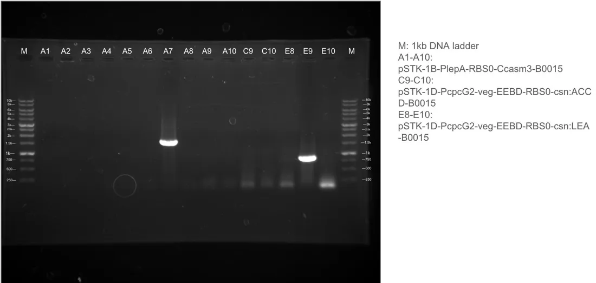
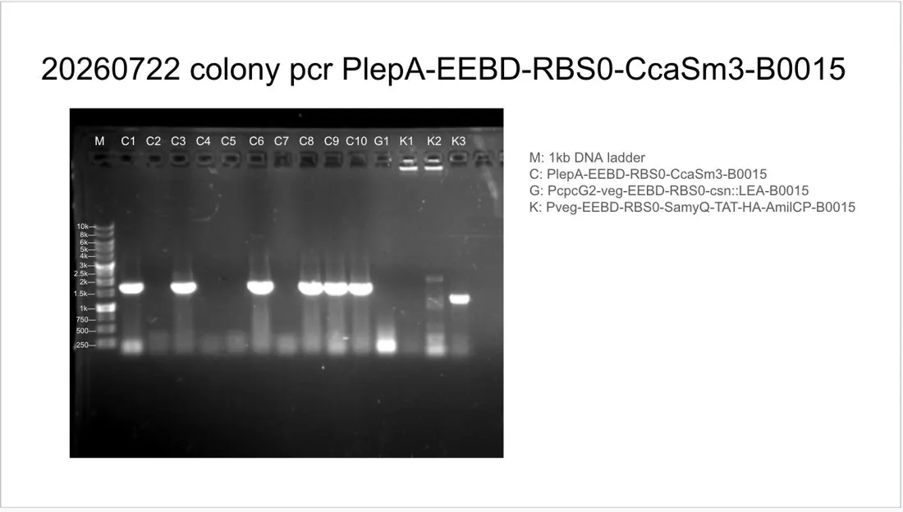
| Colony PCRNaomi, Sarah | p. 6 | |
| 1.0% Agarese Gel preparationSophie L., Ethan L | p. 7 | |
| Gel ElectrophoresisSophie L., Ethan L | p. 7 | |
| Colony PCRChloe, Sophie L, Ethan | p. 8 | |
| Gel ElectrophoresisSophie H | p. 9 | |
| Transformation of TA cloningSophie L, Chloe, Ethan L | p. 10 | |
| Chlorophyll ExtractionPhoebe, Abby T | p. 12 | |
| Colony PCRChloe, Alex, Ryan Wei | p. 12 | |
| Liquid CultureAlex | p. 13 | |
| Prepare 0.8% Agarose GelAlex | p. 15 | |
| Gel ElectrophoresisAlex | p. 15 | |
| MiniprepAbigail and Chloe | p. 16 | |
| Liquid cultureAlex & Sophie C | p. 17 | |
| MiniprepSarah, Sophie H | p. 20 | |
| Liquid CultureChloe, Jacquelyn | p. 21 | |
| Making salinity agar platesAbby K, Abby T, Audrey H | p. 21 | |
| Colony PCRChloe, Abigail, Abby K | p. 25 | |
| MiniprepChloe, Jacquely, Noah | p. 25 | |
| Make 1.0% agarose gelAbby K, Abigail | p. 26 | |
| Gel electrophoresisAbby K, Sophie H | p. 27 | |
| Liquid CultureJacquelyn and Chloe | p. 28 | |
| Colony pcr(redone)Chloe, Abby K, Abigail | p. 30 | |
| Prepare 0.8% Agarose gel for DNA electrophoresis (x2; one redone)Abigail, Abby T | p. 31 | |
| Gel electrophoresis for 0705 colony pcrAbigail, Abby T | p. 31 | |
| MiniprepSophie C and Sophia Y | p. 32 | |
| Gel electrophoresis(0.8% agarose gel)Sophie C | p. 33 | |
| Golden gate assemblyAbigail, Chloe, Abby T | p. 34 | |
| Arabidopsis transformationSarah, Sophie H, Sophie C, Alex, Naomi | p. 41 | |
| Making ½ MS mediumAbby K/T | p. 41 | |
| Transfer arabidopsis to the salinity platesAbby K/T | p. 42 | |
| Remake the incorrect concentrations salinity platesAbby K/T | p. 43 | |
| TransformationAudrey, Felix, Noah, Chloe | p. 44 | |
| TransformationSophie H, Naomi, Alex, Sophie C | p. 45 | |
| Colony PCRSophie C, Abigail, Naomi | p. 47 | |
| 1.0% Agarese Gel preparationSophie L, Abby T | p. 48 | |
| Gel ElectrophoresisAbby T/K | p. 49 | |
| Liquid CultureAbby T | p. 51 | |
| MiniprepAbby T/K, Naomi, Sarah C | p. 53 | |
| Colony PCRSophie C., Audrey C. , Sophie H | p. 54 | |
| 1.0% Agarese Gel preparation (x2 gels)Abby T/K, Sophie C, Audrey C, Sophie H | p. 55 | |
| Gel ElectrophoresisSophie C, Sarah, Sophie H, Naomi | p. 56 | |
| Gel ElectrophoresisAbby K, Abby T, Audrey Chu | p. 56 | |
| Golden gate assemblyAbby T/K, Audrey Chu, Sophie H, Sophie C, Naomi, Sarah | p. 57 | |
| Liquid CultureAlex | p. 58 | |
| MiniprepChars | p. 61 | |
| Prepare 1x ½ MS medium agarAlex | p. 64 | |
| Prepare 2x ½ MS medium agarAlex | p. 64 | |
| Prepare ½ MS medium (hydroponic medium)Naomi | p. 65 | |
| Golden Gate AssemblyAbby K | p. 65 | |
| Fresh weight of ArabidopsisSophie H, Sophie Yeh, Naomi | p. 68 | |
| Chlorophyll ExtractionAbby T, Sophie C, Audrey H, Abby K | p. 72 | |
| Gel ElectrophoresisSophie H | p. 72 | |
| TransformationChloe, Abby K, Alex, Abby T, Sophie C, Olivia | p. 74 | |
| TA cloningChloe | p. 74 | |
| Colony PCRSarah, Sophie C, Sophie H | p. 77 | |
| Colony PCRAlex, Ryan Wei | p. 78 | |
| Prepare 0.8% Gel for Gel Electrophoresis (for 2)Sarah, Sophie C, Sophie H | p. 79 | |
| LB Plate (LBA and LBA with glycerol)Sophie C, Sarah, Naomi | p. 79 | |
| Gel electrophoresisSophie C, Alex, Chloe, Audrey C, Ryan W | p. 80 | |
| Liquid CultureChars | p. 81 | |
| Colony PCRRyan Y, Joshua | p. 84 | |
| Enzyme Digestion | p. 84 | |
| Make 0.8% Gel(x2)Abby T/K | p. 85 | |
| Gel electrophoresisAbby K, Ryan Y | p. 85 | |
| Gel electrophoresisSophie C, Ryan Y | p. 85 | |
| TransformationAbby K, Chloe | p. 86 | |
| TransformationSophie H | p. 87 | |
| MiniprepAbigail and Sophie C | p. 87 | |
| Prepare LB platesSophie C/H, Sarah, Naomi | p. 90 | |
| Prepare ½ MS medium(hydroponics medium)Sophie C/H, Sarah, Naomi, Alex | p. 90 | |
| Colony PCRAbby T/K, Abigail, Mia, Audrey C, Olivia D | p. 90 | |
| Prepare 0.8% Gel for electrophoresisNaomi, Sophie C/H, Sarah C | p. 92 | |
| Gel electrophoresis of colony PCR productsSarah C, Naomi, Sophie H, Audrey C | p. 93 | |
| Golden Gate assemblySophie C, Abby T/K | p. 94 | |
| Miniprep | p. 100 | |
| Golden Gate AssemblyAbby T, Abby K | p. 101 | |
| TransformationChloe, Abigail | p. 102 | |
| TransformationAbby K, Sophia Yeh | p. 103 | |
| miniprepSarah, Naomi, Sophie C | p. 105 | |
| Colony PCRAbby T/K, Audrey H | p. 105 | |
| prepare 2 plates of 0.8% agarose gel(25 holes each)Sophie C Sophie H | p. 107 | |
| prepare 2 plates of 0.8% agarose gel(25 holes each)Audrey H | p. 107 | |
| Gel electrophoresisSophie H | p. 108 | |
| Refilling LBA platesSophie C, Naomi, Sophie H | p. 109 | |
| Colony PCR (redo 0718 colony PCR)Sophie H | p. 112 | |
| Gel electrophoresisRyan Y, Olivia L | p. 113 | |
| TransformationAbby T, Audrey H | p. 114 | |
| Plant seeds for Exp set 6 and exp set 7 vernalizationAbby T, Audrey H | p. 115 | |
| Plant seeds for set A and vernalization in hydroponic systemAlex | p. 115 | |
| Golden Gate Assembly of plasmid into Lv.0 vectorNaomi, Sophie H | p. 118 | |
| Transfer plants from tube rack to Box 1,2,3Alex, Ryan | p. 122 | |
| Prepare antibiotic - erythromycinSarah, Naomi, Sophie H | p. 124 | |
| Miniprep of colour highlighted CDS in STK libraryAbby K. Sophie C | p. 124 | |
| Preparation of LBE plates with glycerolSophie C, Abby K | p. 125 | |
| Transformation of level 0 SamyQ and 0720 GGA of G, H, J, KChloe and Sophie C | p. 125 | |
| ElectrophorationSarah chou, phoebe | p. 126 | |
| Redone Golden Gate Assembly of LOlivia L | p. 126 | |
| Transfer Arabidopsis to salinity platesAudrey H, Abby K | p. 127 | |
| Colony PCR of C, G, and KSophie C | p. 130 | |
| 0.8% gel preparationSophie C, Sophie Liu | p. 130 | |
| ElectrophoresisSophie C, Abby K | p. 131 | |
| TransformationChole, Sophie C | p. 132 | |
| Gel Electrophoresis for Enzyme DigestionSophie L | p. 133 | |
| Issue of Box BIplant model team | p. 133 | |
| Liquid cultureSophie C | p. 136 | |
| Colony PCR of Ho1:pcyAAbby T, Abby K, Sophie C | p. 136 | |
| Golden Gate Assembly of mCherry, mScarlet | p. 137 | |
| Prepare 2.0% Agarose GelSophie L | p. 139 | |
| Make 1% agarose gel*2Abby K, Sophie C | p. 139 | |
| Gel electrophoresisSophie C | p. 140 | |
| PCR for primer quality checkChars | p. 143 | |
| Make 1% agarose gelAbby K, Sophie C | p. 144 | |
| Redoing 20260723 Colony PCRAbbyK, Sophie C | p. 144 | |
| TransformationAbby K, Sophie C | p. 145 | |
| Gel electrophoresisOlivia Lin, Ryan Y | p. 146 | |
| GGA of A, LChloe | p. 146 | |
| Liquid cultureChars | p. 148 | |
| Prepare 2% agarose gelAbby K | p. 148 | |
| Planting Arabidopsis in soilAlex | p. 150 | |
| Colony PCRSophie C, Abby K, Ryan Y | p. 150 | |
| MiniprepOlivia L and Chloe | p. 151 | |
| Making agarose gel(1%) (5 gels)Abby K and Sophie C | p. 152 | |
| TransformationChloe, Sophie C, Abby T | p. 153 | |
| Gel electrophoresis of 0725 colony PCRSophie C and Abby K | p. 153 | |
| Colony PCRRyan Y, Olivia L, and Chloe | p. 155 | |
| ½ MS medium preparation (2000mL)Sara and Sophie H | p. 156 | |
| Gel electrophoresisSophie C and Abby T | p. 157 | |
| TransformationChloe and Sophie C | p. 158 | |
| Liquid CultureAbby T and Sophie C | p. 159 | |
| CH biotech protectant testing on box 1, 2, 3, 4Alex | p. 159 | |
| Prepare 3M NaCl with ½ MS mediumAlex | p. 160 | |
| MiniprepAbigail and Ryan W | p. 162 | |
| Colony PCR of A, LSophie L and Abby T | p. 163 | |
| Prepare 0.8% Agarose GelSophie L | p. 164 | |
| Enzyme DigestionAbby T, Ryan W, and Abigail | p. 164 | |
| PCRChloe | p. 167 | |
| SOC Medium PreparationAbby T | p. 168 | |
| TransformationChloe and Abigail | p. 168 | |
| MiniprepSarah, Naomi, Sophie L | p. 171 | |
| Make 0.8% Agarose gel(small+big)Sophie C | p. 172 | |
| Colony PCR of I, LSophie C | p. 172 | |
| Electrophoresis and Gel extractionAbby T, Chloe | p. 173 | |
| Gel ExtractionAbby T, Chloe | p. 174 | |
| Plant seeds in circular ½ MS medium (neutral) platesAbigail and Sophia Y | p. 175 | |
| Make experiment set 6 salinity platesAbby, Abigail | p. 175 | |
| Prepare ½ MS medium (Hydroponic medium)Abigail, AudreyH, Sophie H | p. 178 | |
| PCRSophie C, Chloe | p. 178 | |
| Making 2% agarose gel x3Sophie C, Chloe | p. 179 | |
| Gel extractionChloe, Sophie C | p. 179 | |
| GGA of A, LSophie C, Chloe | p. 180 | |
| Liquid cultureSophie C, Gabriel | p. 182 | |
| MiniprepSophie C | p. 182 | |
| Gel electrophoresisSophie C | p. 183 | |
| Transfer plants from incubator to salinity platesSara, Sophie H, Abby T | p. 184 | |
| Change medium for hydroponic box 1, 2, 3, 4Abby T, Audrey H | p. 185 | |
| Gel extractionAbby T | p. 187 | |
| Making 1% Agarose gelRyan Yuan | p. 187 | |
| Electroporation of KGrabriel | p. 188 | |
| PCRSophie C, Abby T | p. 188 | |
| Make 2% gel(x3)Sophie C | p. 189 | |
| TransformationSophieC | p. 189 | |
| MiniprepSarah and Sophie H | p. 192 | |
| Make B sub electrocompetent cells(x4)Abigail and Ryan W | p. 193 | |
| Colony PCRSophie C, Ryan Y, and Sophia | p. 193 | |
| Make 1% agarose gelChloe and Sophie C | p. 194 | |
| Make LB, LBA with glycerol, and LBE with glycerol 5µg/mLSarah and Sophie H | p. 195 | |
| Gel electrophoresisChloe and Sophie C | p. 196 | |
| TransformationSarah and Sophie H | p. 197 | |
| ElectroporationChloe and Sophie C | p. 197 | |
| Golden Gate Assembly(G, I, M) | p. 198 | |
| Liquid cultureRyan Wei | p. 201 | |
| Plant seeds for set C and vernalize in hydroponic systemAlex | p. 201 | |
| Prepare 50 mL 0.8% ½ MS agarAlex | p. 201 | |
| Prepare 2 1500 mL ½ MS mediumAlex | p. 202 | |
| Colony PCR of JSophie C, Ryan Y | p. 204 | |
| Make 1% agarose gelRyan Y, Sophie C | p. 204 | |
| Gel electrophoresis | p. 205 | |
| TransformationChloe | p. 205 |
August 2026
- Screened and verified engineered constructs using colony PCR, gel electrophoresis, miniprep and enzyme digestion.
- Performed multiple levels of Golden Gate Assembly.
- Started protein analysis, including SDS-PAGE and Western blotting.
- Tested recombinant protein purification and dialysis.
- Continued Arabidopsis heat and salinity stress experiments with protectants. Plants
- Tested B. subtilis growth in hay infusion as a possible environmental growth medium.
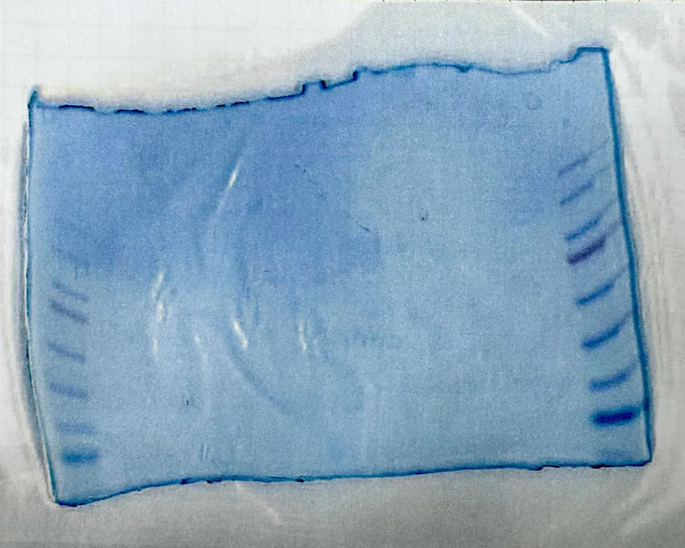
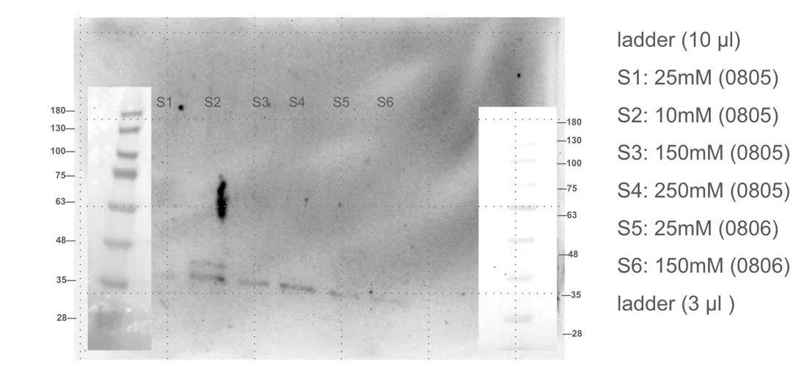
| Miniprep (liquid culture 0731)Naomi, Sarah, Sophie H | p. 6 | |
| Collect B. sub supernatant and pellet of JSarah, Naomi, Sophie H | p. 7 | |
| Make acrylamide gelSophie C., Chloe | p. 7 | |
| Make 0.8% agarose gel (x3)Sophie H | p. 7 | |
| Enzyme DigestionSarah, Naomi, Sophie H | p. 8 | |
| Electrophoresis for Enzyme DigestionSarah, Naomi, Sophie H | p. 9 | |
| Colony PCRRyan Y, Olivia L, Abby T | p. 10 | |
| Gel electrophoresisOlivia Lin, Abby Tsai,Ryan Y | p. 11 | |
| Liquid cultureOlivia Lin, Ryan Y | p. 12 | |
| Level 2 Golden Gate AssemblyAbby T, Audrey H | p. 13 | |
| Level 1 Golden Gate AssemblySophie C, Abigail | p. 18 | |
| Western blotChloe, Sophie C, Chars | p. 18 | |
| MiniprepOlivia L, Ryan Y | p. 21 | |
| PCRRyan Y, Sophia Y | p. 21 | |
| Prepare 2% gel for PCRNaomi | p. 22 | |
| Prepare 1% gel for PCRNaomi | p. 23 | |
| Enzyme DigestionRyan Y, Olivia Lin | p. 23 | |
| TransformationAlex | p. 24 | |
| Gel extraction of Mf001, Mf002, L3S2P56Sophie C | p. 26 | |
| Colony PCRSophie H, Sophia Y | p. 26 | |
| Golden gate assemblySophie C | p. 27 | |
| Make 0.8% gelSophie C/H,Naomi | p. 29 | |
| Gel electrophoresisEthan C, Sophie C | p. 29 | |
| Liquid CultureSophie C | p. 31 | |
| 250mL TB medium preparationSophie H, Naomi | p. 33 | |
| Miniprep of A8, H4, and H5Sarah, Naomi | p. 33 | |
| Colony PCRAlex, Sophie C, Chloe | p. 34 | |
| Colony PCRChloe & Sophie C | p. 35 | |
| make 0.8% gelSophie C, Chloe | p. 35 | |
| make 1% gelSophie C, Chloe | p. 36 | |
| TransformationSophie C, Chloe | p. 36 | |
| Liquid cultureSophie C | p. 37 | |
| Gel electrophoresisSophie C, Chloe | p. 37 | |
| Gel electrophoresisSophie C | p. 38 | |
| Add 正瀚protectant to exp7. Circular plates (pretreatment group: 0, 正瀚/ 100 NaCl, 正瀚)Sophia Y | p. 38 | |
| Agar exp set 6 fresh weightAudrey H | p. 39 | |
| MiniprepNaomi, Sophie H | p. 42 | |
| Colony PCRSophie C, Abby T | p. 42 | |
| Make 1% & 0.8% gelSophie H | p. 44 | |
| Protein Purification & extractionAbigail | p. 44 | |
| Gel electrophoresisSophie C | p. 45 | |
| Golden Gate AssemblyChloe, Sophic C | p. 46 | |
| Make acrylamide gelSophie C | p. 48 | |
| agar (exp set #6) chlorophyll extractionAudrey H, Phoebe, Sarah C | p. 49 | |
| Seed planting on agarAudrey H, Naomi, Sophie H | p. 49 | |
| Add CH protectant and NaCl on horizontal agar plates(exp set #7)Audrey H | p. 49 | |
| Colony PCR of G, HSophie H, Sarah | p. 52 | |
| Make 0.8% gel for enzyme digestion in 8/2Naomi | p. 53 | |
| Gel electrophoresis of 0802 enzyme digestionSarah , Naomi | p. 53 | |
| Make 1% gel for colony PCR(25 well*3)Sarah Chou, Sophie H | p. 53 | |
| Load gel for colony PCR | p. 54 | |
| make LBA plate with glycerolSophi H | p. 56 | |
| Protein purification(take from 0805 filtered tubes)Abigail and Sophie C | p. 56 | |
| SDS-PAGE electrophoresisAbigail and Sophie C | p. 57 | |
| Coomassie Blue StainingAbigail and Sophie C | p. 58 | |
| Western BlottingSophie C and Abigail | p. 59 | |
| Protein DialysisSophie C and Abigail | p. 60 | |
| TransformationSophie C | p. 61 | |
| Add CH protectant on horizontal agar plates (exp set #7)Sophic C and Naomi | p. 61 | |
| Colony PCRSarah, Sophie L, Sophia Y, and Sophie H | p. 63 | |
| Golden Gate Assembly of G, H, L, X, VSophie C, Chloe | p. 63 | |
| Liquid culture of ABDISarah, Sophie L | p. 66 | |
| Liquid culture of B-sub WBS00Sophie L, Sarah | p. 66 | |
| Make 250mL LBC with glycerol agarSarah, Sophie L, Sophie H | p. 66 | |
| Make 0.8% Agarose gel for two 25well big traySarah, Sophie H, Sophie L | p. 67 | |
| Electrophoresis of LSarah, SophieL, Sophie H | p. 67 | |
| MiniprepSarah, Sophie H | p. 70 | |
| B Sub electrocompetent cells prep(WN800)Chloe, Abigail, Sophie C | p. 70 | |
| PCRSophie C, Chloe | p. 71 | |
| make 1% agarose gelSophie C | p. 72 | |
| Gel electrophoresis of PCRSophie C | p. 72 | |
| Transformation (G,H,L,X,V)Sophie C, Ryan W, Chloe, Abby T, Ryan Y | p. 73 | |
| Colony PCRChars | p. 73 | |
| Colony PCR of G,H,X,VAbigail, Chloe W | p. 76 | |
| Gel electrophoresis of Colony PCR | p. 77 | |
| Measure Arabidopsis fresh weightNaomi, Sophia L, Sophie H | p. 78 | |
| Measure OD of hay infusionSophia L and Abigail | p. 78 | |
| Vernalize exp#7 trial 2 seeds | p. 79 | |
| agar experiment set 7 fresh weightNaomi, Sophia L, Sophie H | p. 79 | |
| Make 1% gelSophie C | p. 82 | |
| ElectrophoresisSophie C | p. 82 | |
| Colony PCR of LSophie C, Chloe | p. 83 | |
| electroporationChloe, Sophie C | p. 84 | |
| Colony PCRChloe, Sophie C | p. 84 | |
| Golden Gate AssemblyChloe | p. 85 | |
| Gel electrophoresisChloe | p. 86 | |
| Liquid cultureSophie C | p. 87 | |
| 1/10 MS medium preparation (1000mL)Sophie H | p. 87 | |
| agar (exp set #7 trial 1) chlorophyll extractionSophi C, Audrey H | p. 88 | |
| Arabidopsis soil planting (tray 5 & tray6)Sophie H | p. 88 | |
| Colony PCR (of J in Bacillus subtilis)Sophie C | p. 90 | |
| MiniprepSophia Y, Sophie C | p. 90 | |
| Gel Electrophoresis | p. 91 | |
| TransformationSophie C | p. 92 | |
| ElectroporationSophie C | p. 92 | |
| Hay InfusionSophia | p. 95 | |
| Colony PCRSophie C, Abby T | p. 95 | |
| Make 1% GelChloe, Abby T | p. 96 | |
| Gel ElectrophoresisAbby T | p. 97 | |
| Gel electrophoresisChloe | p. 97 | |
| Liquid CultureChars | p. 98 | |
| L0 Golden Gate AssemblySophie C | p. 99 | |
| plant new set of seeds for hydroponic systemSophie H | p. 100 | |
| Hay infusionSophia L, Abigail | p. 100 | |
| fortilize plantsAlex | p. 101 | |
| Hay InfusionSophia L, Abigail | p. 103 | |
| PCRSophie C | p. 103 | |
| Gel electrophoresis (colony pcr)Sophie C | p. 104 | |
| Gel electrophoresis (PCR)Sophie C | p. 105 | |
| MiniprepRyan W | p. 106 | |
| TransformationSophie C | p. 107 | |
| Golden Gate Assembly (L)Sophie C | p. 107 | |
| Golden Gate Assembly (V)Sophie C, Sarah, Abigail | p. 109 | |
| Add zhenhan protectant on horizontal agar(trial #2)Chloe | p. 109 | |
| hay infusionSophia L, Aibgail | p. 110 | |
| Colony PCR (Q1, Q2, S)Sophie C | p. 112 | |
| Make 1% agarose gel x3Sophie C | p. 114 | |
| Fertilize plants (in soil)Sophie H | p. 114 | |
| Transformation of L and VNaomi, Sophie H | p. 115 | |
| Make LBC plateSophic H, Alex Li, Naomi | p. 115 | |
| Make LB mediumNaomi, Sophie H | p. 115 | |
| Fertilize plantsSophie H | p. 116 | |
| Cotreatment(正瀚 protectant+100NaCl)Abigail | p. 116 | |
| prepare 0.1 MS mediumAlex | p. 116 | |
| Add CH protectant in Box C2 (pretreatment) for heat stress testingAlex | p. 117 | |
| Hay infusionSophia L, Sophie H, Olivia Du, Mia | p. 117 | |
| Make LBC with glycerolAbby K/T | p. 119 | |
| Colony PCR (L) | p. 119 | |
| Make 2% Agarose Gel x2Sophie C | p. 120 | |
| MiniprepSarah, Sophie H | p. 120 | |
| Gel electrophoresis (L)Sophic C | p. 121 | |
| Colony PCRAbbyK, Sophie C, Chloe | p. 122 | |
| Golden Gate AssemblySophie C, Abby T/K | p. 123 | |
| Gel electrophoresis (V)Abby K | p. 125 | |
| Make 1% agarose gelAbby K , Sophie C | p. 125 | |
| hydroponic heat stress testingAlex | p. 126 | |
| add zhenhen protectant to heat stress testing agar platesAbby T | p. 126 | |
| Protein Extraction | p. 128 | |
| Miniprep of H1 (0809 liquid culture)Abby T | p. 128 | |
| Level 2 Golden Gate AssemblyAbby T, Alex | p. 129 | |
| Spray CH bio peptide to co-treatment group, and place all groups into incubator at 37°C for thermo primingAbby T | p. 130 | |
| Ni-NTA Regenerate Buffer (for protein purification)Ryan Y | p. 130 | |
| TransformationAbby T/K | p. 130 | |
| Remove protectant from C3 and add protectant in C4Alex | p. 131 | |
| Spray CH bio peptide to co-treatment (7:00pm)+place all group into incubator at 37℃ for therm primingAbby T | p. 131 | |
| LB MediumSophie C | p. 133 | |
| Colony PCRSophie C, Abby K | p. 133 | |
| Make 1% agarose gel x2Sophie C | p. 134 | |
| Gel Electrophoresis of QD and QBAbby K | p. 134 | |
| Gel Electrophoresis of QA and QCSophie C | p. 135 | |
| Transformation (V)Sophie C | p. 136 | |
| Add zhenhen protectant (pre-treatment) to experiment set #7 trial 3 (3:30pm)Abby K | p. 136 | |
| Plant new seeds on soil potsAbigail , Sophie C | p. 137 | |
| Spray CH bio peptide to after-treatment (7:00pm)Sophie C | p. 137 | |
| plant new set of seeds (set F) for hydroponic systemAlex | p. 137 | |
| Electroporation competent cell preparationGabriel | p. 140 | |
| ElectroporationGabriel | p. 140 | |
| Colony PCR (QA, QB, QC, QD)Sophie C | p. 140 | |
| Make 1% Gel x2Sophie C | p. 141 | |
| Gel electrophoresisAbby K | p. 141 | |
| Colony PCR (L)Sophie C | p. 142 | |
| Gel electrophoresis (L)Sophie C | p. 143 | |
| Golden gate assembly (level 2)Sophie C | p. 144 | |
| Add NaCl + CH peptide to contreatment (exp set #7 trial 3)Abigail | p. 145 | |
| Colony PCR (X, V, J)Abby K, Abigail | p. 148 | |
| Gel electrophoresis (1% gel)Sophie C | p. 148 | |
| Transformation (L)Sophie C | p. 149 | |
| Prepare 420 mL 0.8% ½ MS agarAbby K | p. 149 | |
| Hay InfusionSophia L, Sophie H, Olivia Du, Mia | p. 150 | |
| Add CH protectant in Box D2 (pre-treatment) for heat stress testingAlex | p. 150 | |
| plant new seeds on agar x12 ( on 0.8% agar)-> vernalizeAbigail | p. 151 | |
| Add CH protectant in Box D2 (pre-treatment) for heat stress testingAlex | p. 151 | |
| MiniprepSophie C., Abigail | p. 153 | |
| PCR of V, XSophie C | p. 154 | |
| Enzyme DigestionSophie C., Abby K | p. 155 | |
| Gel electrophoresisSophie C | p. 156 | |
| Prepare 420 mL 0.6% ½ MS agarAbby K | p. 157 | |
| Level 1 Golden Gate Assembly of Bopep4Sophie C, Abby K | p. 157 | |
| hydroponic heat stress testingAlex | p. 159 | |
| Hay infusionSophia L, Olivia Du | p. 160 | |
| MiniprepSarah, Ryan W | p. 162 | |
| TransformationSophie C | p. 163 | |
| PCRSarah, Ryan W | p. 163 | |
| Prepare 1.0M KOHSophia Y | p. 164 | |
| Gel electrophoresisRyan W | p. 164 | |
| Golden Gate Assembly (P, Q, R, S)Chars | p. 165 | |
| Prepare 0.1 MS mediumSophia Y | p. 168 | |
| Hay InfusionSophia L | p. 169 | |
| Remove D3’s protectant and add protectant in D4Alex | p. 169 | |
| Measure fresh weight of heat stress trial (agar)Abigail | p. 170 | |
| planting seeds on 0.6% agar platesAbby K, Abigail, Sophie C | p. 170 | |
| Colony PCRSophie C, Abby K | p. 172 | |
| Gel electrophoresisSophie C | p. 172 | |
| Measure chlorophyll of heat stress trial (agar)-chlorophyll extractionAudrey H | p. 173 | |
| TransformationSophie C, Abby K, Chloe | p. 173 | |
| Make 1% MS medium without vitamin and 1% agarSara, Alex | p. 176 | |
| Colony PCRChloe | p. 176 | |
| gel electrophoresis(1% gel)Chloe, Abby K | p. 177 | |
| miniprepAbby K | p. 180 | |
| Colony PCRNaomi, Sarah | p. 182 | |
| Colony PCRSophie C, Abby K | p. 182 | |
| LBK, LBC+glycerol, TBC, LBA+glycerol, LB, LBE+glycerolNaomi, Sarah | p. 183 | |
| gel electrophoresisSophieC, Sarah | p. 184 | |
| make acrymide gelSophie C | p. 184 | |
| golden gate assembly of N,OChloe, Sophie C | p. 185 | |
| TransformationChloe | p. 186 | |
| liquid cultureChloe | p. 187 | |
| Miniprep (A, C, D, I, P, R)Abby K, Abby T | p. 189 | |
| Colony PCR of B, QAbby T | p. 190 | |
| Gel electrophoresis of Colony PCR (1% gel) | p. 191 | |
| Cotreatment + NaCl on soilAbigail | p. 191 | |
| Transformation of N, OSophie C | p. 192 | |
| Golden Gate Assembly of X *3Sophie C | p. 192 | |
| MiniprepSarah, Audrey H | p. 195 | |
| Electroporation of P, RAbby T/K | p. 195 | |
| TransformationSophie C | p. 196 | |
| Golden Gate AssemblySophie C | p. 196 | |
| protein extraction from cell and medium | p. 197 | |
| Colony PCROlivia | p. 199 | |
| Gel electrophoresisOlivia | p. 199 | |
| SDS-PAGEchars | p. 200 | |
| Gel electrophoresisAbby K | p. 202 | |
| Western blot (J in WB800) | p. 202 | |
| Colony PCRSophie C | p. 202 | |
| Agar - ACCD trial 1 after treatment/CH trial4 co treatment w NaCl | p. 203 | |
| Soil - 100mM NaCl | p. 203 | |
| Gel electrophoresisSophieC | p. 204 | |
| MiniprepSophie C, Abby K | p. 204 | |
| PCR | p. 205 | |
| Golden gate assembly (L, O, M) | p. 205 | |
| Golden gate assembly (V(1:5), V(1:7)) | p. 206 |
September 2026
September 2026
Ongoing
September notebookThe month is still being written up. Its PDF goes here when it closes.
October 2026
October 2026
Ongoing
October notebookThe month is still being written up. Its PDF goes here when it closes.
Plant notebook
Unlike the day-by-day record of the wet lab notebook, a complete plant experiment unfolds over days and sometimes weeks, and its critical milestones, from seed vernalization and transfer to protectant application and harvest, are spread across the calendar. To keep every experimental trial as one continuous record, our plant notebook unifies each experimental set from start to finish and tracks all of its growth timeline results. Full protocols and complete outcomes are on our Experiments and Plants pages.
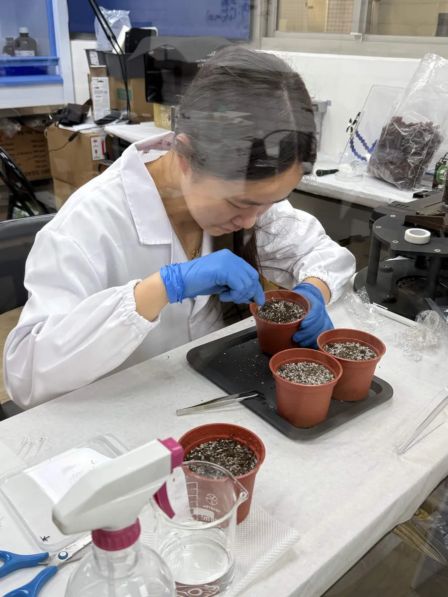
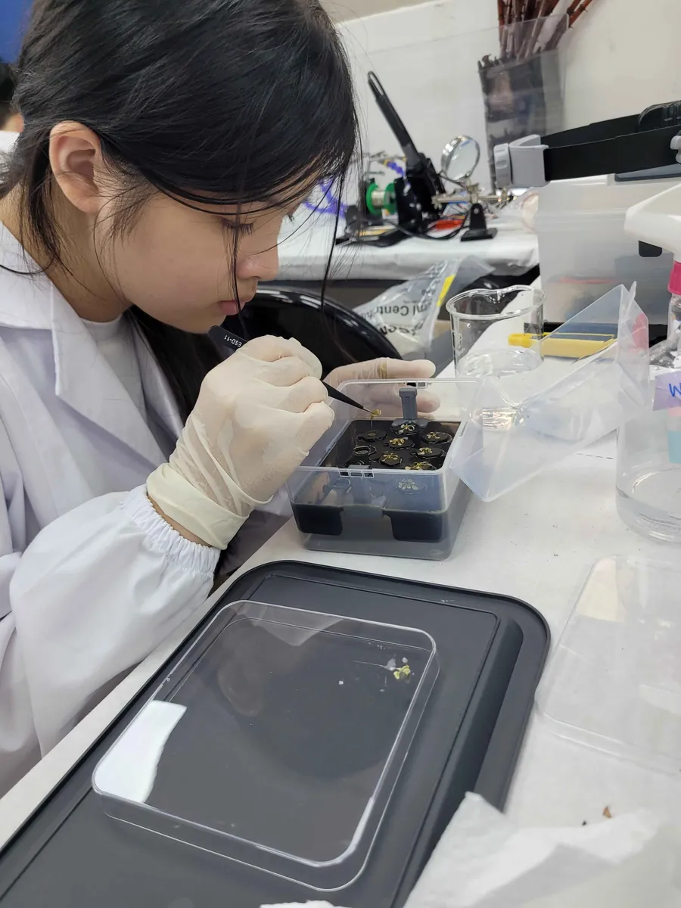
Plant notebook PDFThe plant sub-team's notebook is a working document and has not been exported yet.
Until then, these are the dated entries it holds, taken from the working document on 27 August. Every one of them is also in the wet lab notebook for its month, on the page given.
July 202619 entries
| Chlorophyll ExtractionPhoebe, Abby T; recorded by Sophie H | p. 12 | |
| Making salinity agar platesAbby K, Abby T, Audrey H | p. 21 | |
| Four entries on the same day, across the salinity setsSarah, Sophie H, Sophie C, Alex, Naomi, Abby K, Abby T | p. 41 | |
| Fresh weight of ArabidopsisSophie H, Sophia Yeh, Naomi | p. 68 | |
| Chlorophyll ExtractionAbby T, Sophie C, Audrey H, Abby K | p. 72 | |
| Plant seeds for Exp set 6 and exp set 7 vernalizationAbby T, Audrey H | p. 115 | |
| Plant seeds for set A and vernalization in hydroponic systemAlex | p. 115 | |
| Transfer plants from tube rack to Box 1, 2, 3Alex, Ryan | p. 122 | |
| Issue of Box BIplant model team | p. 133 | |
| Planting Arabidopsis in soilAlex | p. 150 | |
| ½ MS medium preparation (2000 mL)Sara, Sophie H | p. 156 | |
| CH biotech protectant testing on box 1, 2, 3, 4Alex | p. 159 | |
| Prepare 3M NaCl with ½ MS mediumAlex | p. 160 | |
| Plant seeds in circular ½ MS medium (neutral) platesAbigail, Sophia Y | p. 175 | |
| Make experiment set 6 salinity platesAbby, Abigail | p. 175 | |
| Transfer plants from incubator to salinity platesSara, Sophie H, Abby T | p. 184 | |
| Change medium for hydroponic box 1, 2, 3, 4Abby T, Audrey H | p. 185 | |
| Plant seeds for set C and vernalize in hydroponic systemAlex | p. 201 | |
| Prepare 50 mL 0.8% ½ MS agar, and two batches of 1500 mL ½ MS mediumAlex | p. 201 |
August 20268 entries
| Add 正瀚 protectant to exp 7 circular plates, pretreatment groupSophia Y | p. 38 | |
| Agar exp set 6 fresh weightAudrey H | p. 39 | |
| Agar (exp set #6) chlorophyll extractionAudrey H, Phoebe, Sarah C | p. 49 | |
| Seed planting on agarAudrey H, Naomi, Sophie H | p. 49 | |
| Add CH protectant and NaCl on horizontal agar plates (exp set #7)Audrey H | p. 49 | |
| Measure Arabidopsis fresh weightSophia L, Abigail | p. 78 | |
| Measure OD of hay infusionSophia L, Abigail | p. 78 | |
| Prepare 420 mL 0.8% ½ MS agarAbigail, Abby K | p. 149 |
Tips for reading these files
-
Every entry names two kinds of people: the one who carried out the experiment and the one who recorded it. Sometimes the two names are the same, and sometimes the recorder's name is missing. The first happens mostly in April, when there were few experiments and they were run by several students together. The second happens mostly from June onwards, when many experiments ran on the same day and the recording was taken on by particular students.
Done by Chars, recorded by Chars. -
Dates are written as 20260722: year, month and day, with no separators.
2026072222 July 2026 -
Some entries have a Result heading with nothing under it, mostly miniprep results.
Results: -
Most gel results, for electrophoresis and Western blots, were first labelled in the team's monthly gel slides and then added to the notebook, so the heading inside a photograph can differ from the date of the page it sits on.